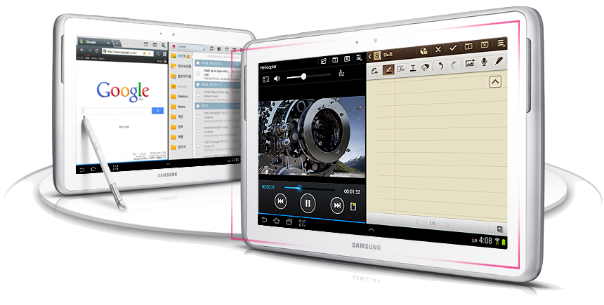

삼성 갤럭시 노트 10.1
1. 외관

삼성전자가 2012년 7월 B2B로 출시한 안드로이드 태블릿 컴퓨터.
2. 사양
| 프로세서 | 삼성 엑시노스 4412 SoC. ARM Cortex-A9 MP4 1.4 GHz CPU, ARM Mali-400 MP4 440 MHz → 533Mhz GPU | ||
| 메모리 | 2 GB LPDDR2 SDRAM, 16 GB 내장 메모리, micro SDXC (최대 64 GB 까지) | ||
| 디스플레이 |
10.1인치 WXGA(1280 x 800) RGB 서브픽셀 방식의 삼성 Super PLS LCD (149 ppi) 멀티터치 지원 정전식 터치 스크린 |
||
| 네트워크 | 기본 | LTE Cat.3, HSPA+ 42Mbps, HSDPA & HSUPA & UMTS, GSM & EDGE | Wi-Fi 802.11a/b/g/n, 블루투스 3.0 |
| - | - | ||
| 카메라 | 전면 190만 화소, 후면 500만 화소 AF 및 LED 플래시, BSI 카메라 | ||
| 배터리 | 내장형 Li-lon 7000 mAh | ||
| 운영체제 | 안드로이드 4.0 (Icecream Sandwich) → 4.1 (Jellybean) → 4.4 (KitKat) | ||
| 규격 | 180 x 262 x 8.9 mm, 597 g(Wi-Fi 모델) / 600 g(LTE / WCDMA 모델) | ||
3. 상세
2012년 2월 MWC 2012 행사에서 갤럭시 노트의 상위 태블릿 버전으로 처음 공개되었었다. 이 때는 듀얼 코어 AP를 탑재했고, S펜 수납 공간이 없었다. 이후 시간이 흐르면서 AP의 CPU 아키텍쳐가 듀얼 코어에서 쿼드 코어인 엑시노스 4412로 변경, 램이 2 GB로 올라가고 카메라 화소 또한 300만에서 500만으로 증가하여 사양이 갤럭시 S III 급으로 변경되었다. S펜도 수납형으로 바뀌는 등 긍정적인 방향으로 변화하며 해상도와 ppi만 올라가면 태블릿 컴퓨터 계의 끝판왕이 될지도 모른다고 예상됐었지만, 해상도가 그대로인 것은 두고두고 아쉽다는 반응이 대다수다. 해상도를 높이지 못한 것은, WXGA 800p 해상도가 당시 레퍼런스 태블릿 컴퓨터의 역할을 하고 있었던 Xoom의 해상도이고, 갤럭시 노트 전용 애플리케이션역시 WXGA 800p로 맞춰진 것이 주 원인으로 보인다.